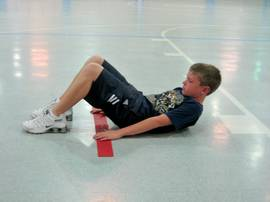

HUMAN Fitness - Singura clinică de fitness din România
 Facebook Instagram Youtube Linkedin 0771 600 700 contact@humanfitness.ro Home Concept Echipa Servicii Corectare Posturala Slabire si Tonifiere Forta si Hipertrofie Musculara Antrenamente Distractive si Antistres Reducerea Durerilor Cronice Antrenează-te corect Începători Intermediari Avansați Sportivi Abonamente Blog Contact Menu Home Concept Echipa Servicii Corectare Posturala Slabire si Tonifiere Forta si Hipertrofie Musculara Antrenamente Distractive si Antistres Reducerea Durerilor Cronice Antrenează-te corect Începători Intermediari Avansați Sportivi Abonamente Blog Contact 0771 600 700 contact@humanfitness.ro Home Concept Echipa Servicii Corectare Posturala Slabire si Tonifiere Forta si Hipertrofie Musculara Antrenamente Distractive si Antistres Reducerea Durerilor Cronice Antrenează-te corect Începători Intermediari Avansați Sportivi Abonamente Blog Contact Menu Home Concept Echipa Servicii Corectare Posturala Slabire si Tonifiere Forta si Hipertrofie Musculara Antrenamente Distractive si Antistres Reducerea Durerilor Cronice Antrenează-te corect Începători Intermediari Avansați Sportivi Abonamente Blog ContactCLINICA TA DE FITNESS PROGRAM
100% PERSONALIZAT
FITNESS, KINETOTERAPIE ȘI NUTRIȚIE
Corectare posturală, slăbire și tonifiere, forță și hipertrofie musculară, reducerea durerilor cronice, program adaptat fiecăruia dintre voi
DATORIA NOASTRĂ ESTE SĂ ADUCEM CALITATE ÎN VIAȚA TA!
PROGRAMARESĂNĂTATEA TA ÎNCEPE ȘI SE MENȚINE ÎN SALA DE SPORT
Sportul înseamnă o bună funcționare a oamenilor,
mai multă energie, mai mult randament în activitățile
zilnice.
DEZVOLTĂ-ȚI SĂNĂTATEA
PSIHO-EMOȚIONALĂ PRIN SPORT
Sportul aduce și beneficii psiho-emoționale prin creșterea încrederii și a stimei personale. Fă un prim pas spre o viață sănătoasă prin fitness!
SĂNĂTATEA TA ÎNCEPE ȘI SE MENȚINE ÎN SALA DE SPORT
Sportul înseamnă o bună funcționare a oamenilor,
mai multă energie, mai mult randament în activitățile
zilnice.
DEZVOLTĂ-ȚI SĂNĂTATEA
PSIHO-EMOȚIONALĂ PRIN SPORT
Sportul aduce și beneficii psiho-emoționale prin creșterea încrederii și a stimei personale. Fă un prim pas spre o viață sănătoasă prin fitness!
conceptul human
Prima clinică de fitness din România
Fitnessul nu înseamnă „pătrățele” sau „pachete de mușchi”.
Vă prezentăm un nou concept: Clinica de Fitness. Sport, kinetoterapie și nutriție, într-un program personalizat.
Primul pas: consultația de specialitate
servicii
Antrenează-te inteligent și eficient alături de Echipa HUMAN!
Corectare
Posturală
Slăbire și
Tonifiere
Forță și Hipertrofie Musculară
Reducerea Durerilor Cronice
PROGRAMARE În „industria” fitnessului, veriga slabă este dezechilibrul dintre sănătate și mișcare.
Conceptul HUMAN pleacă de la introducerea kinetoterapiei în fitness. În felul acesta,
ne asigurăm că vom aplica un program complet în funcție de particularitățile, dar și dorințele tale.
Cristi Strava , preparator fizic
nivel de dificultate
Reconectare la propria persoană filozofia pe care o aducem în viața ta de zi cu zi
ÎNCEPĂTORI
INTERMEDIARI
AVANSAȚI
SPORTIVI
PROGRAMAREATENȚIE
Exercițiile fizice efectuate fără supravegherea unui antrenor specializat pot duce la înrăutățirea problemelor articulare,
bolilor de oase, osteoporozei, herniei de disc etc.
SOLICITĂ O PROGRAMARE
Telefonic onlinewe are human
Esența sănătății este mișcarea. Îți recomandăm să o practici conștient! Conștient de forma ta fizică actuală și conștient că îți poți îmbunătăți atât înfățișarea, cât mai ales starea de sănătate, dacă urmezi un program de fitness unic și 100% personalizat.
Servicii
Corectare posturală Slăbire și Tonifiere Forță și Hipertrofie Musculară Antrenament Distractiv și Antistres Reducere Dureri CroniceBECOME HUMAN
Contact Blog Parteneri Politică de confidențialitate Politică privind fișierele cookies© All rights reserved
Made with ❤ by RedSpot Branding